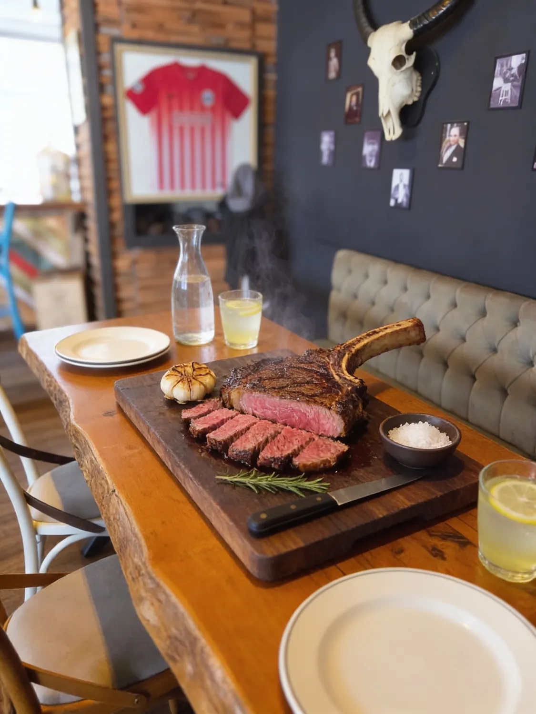
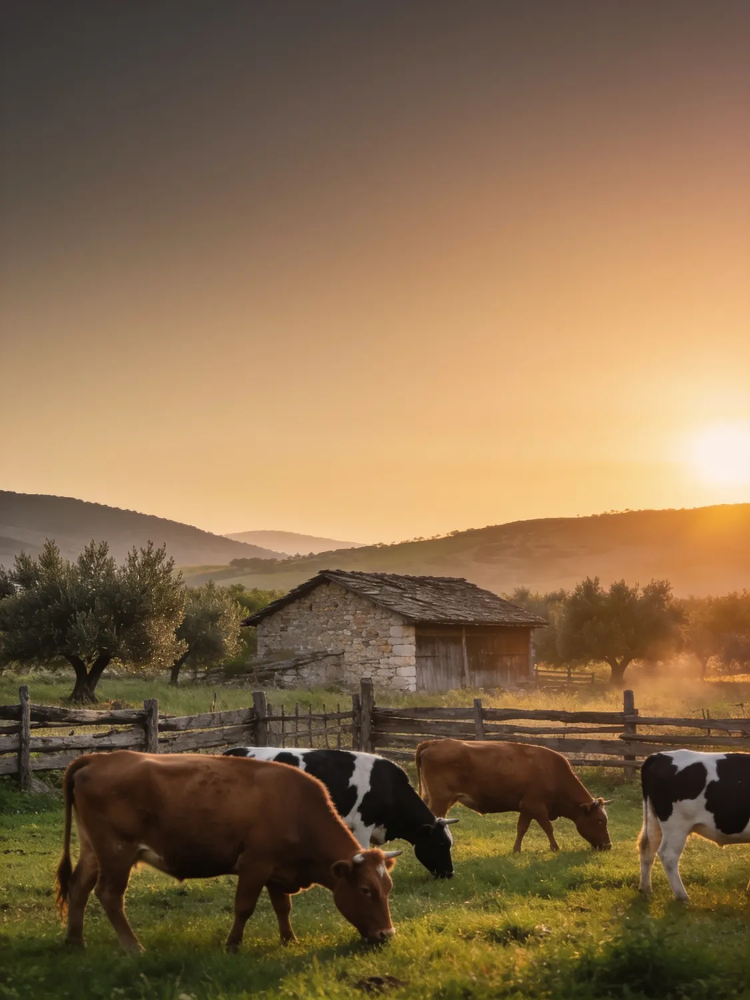
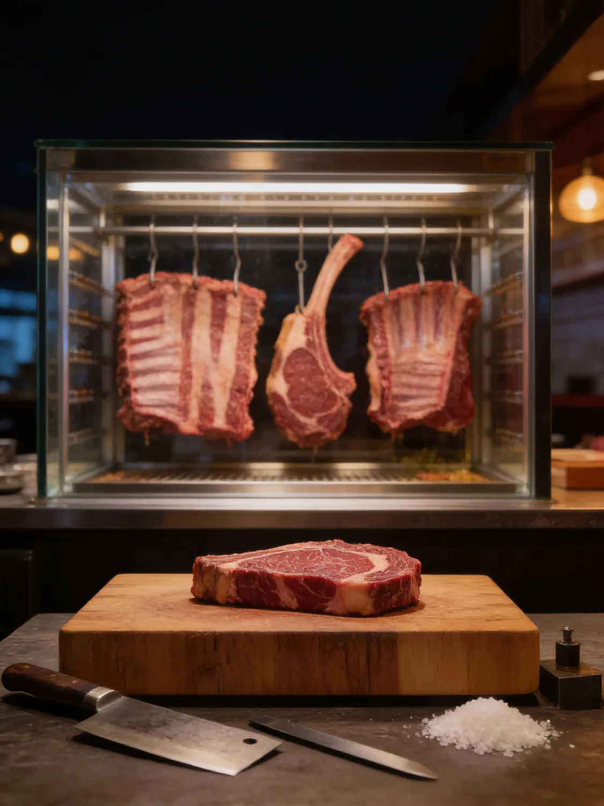
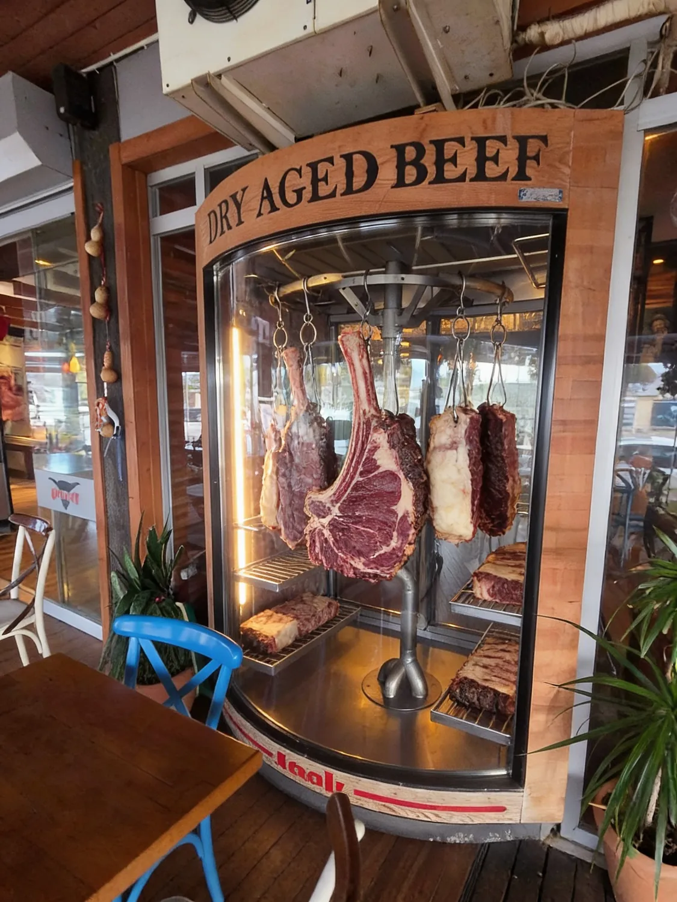

Şevk-ET
Şevk-ETThe butcher’stable.
The farm, the butcher’s counter and the restaurant belong to one family. We raise the cattle, cut the meat and cook it.

Farm, butcher, table
All three belong to the same family. That is where the quality handed down from grandfather to grandson comes from: the meat never leaves our hands between the farm and your plate.

Farm
We raise our own cattle at Şevket Farm. For sacrificial animals and shares ahead of Kurban Bayramı, call the farm: 0533 607 49 92.

Butcher
The meat is cut and aged at our own counter. Köfte, sucuk and sausages are made here too. Butcher: 0286 217 72 26.

Table
Dishes are made with what is in season and served straight off the fire. For a table: 0286 213 09 08.
Which cut, which plate
A butcher’s menu is read off the animal. Tap a cut to see the dishes that come from it.
How many grams tonight?
At the butcher’s, meat is talked about in grams. Steaks and red meats, from the largest to the smallest.
- Ottoman Steak750–800 g3.900 ₺
- Porterhouse Steak600–650 g3.400 ₺
- T-bone Steak450–500 g2.900 ₺
- Dallas Steak450–500 g2.900 ₺
- Beef Chop350–400 g2.450 ₺
- Şevket Special350 g, for two2.500 ₺
- New York Steak300 g2.200 ₺
- Beef Shashlik250 g1.300 ₺
- Beef Ribeye220 g1.300 ₺
- Dana Lokum (beef tenderloin)200 g1.300 ₺
- Filet Mignon200 g1.300 ₺
- Şevket Kobe200 g2.200 ₺

Aged in the cabinet, cut at the counter
The dry-aging cabinet on the terrace is not decoration. Bone-in cuts rest here while their flavour deepens.
To take some home, call the butcher: köfte, sucuk, sausages and any cut you like, prepared to order.
Log tables, gramophones, a terrace
Stone walls and tufted benches inside, a glazed terrace with ivy outside. There is room for two and room for ten.


Match nights
Süper Lig and European games on screen. Call ahead on match days.
Big tables
For group bookings, call at least one day ahead. Larger groups can also ask for a fasıl ensemble.
Book your table
0286 213 09 08Book ahead or just drop in. For group bookings, please call at least one day in advance.
- ADDRESS
- Barbaros Mah. Aziziye Cad. Eriş Sok. No: 87-89, Çanakkale 17100
- HOURS
- Every day 10.30 – 23.00
- STEAKHOUSE
- 0286 213 09 08
- BUTCHER
- 0286 217 72 26
- FARM
- 0533 607 49 92
- @sevketkasapsteakhouse
ENJOY YOUR MEAL